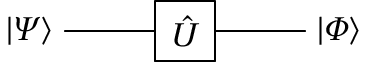
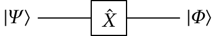
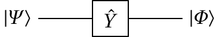
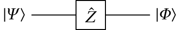
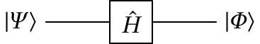

Jaime Villate. Faculdade de Engenharia da Universidade do Porto
Um qbit (quantum bit) é um sistema físico com apenas dois estados próprios, $|0\rangle$ e $|1\rangle$. O estado geral do qbit é uma sobreposição dos dois estados próprios:
\begin{displaymath} |\otherPsi\rangle = \otherPsi_1|0\rangle + \otherPsi_2|1\rangle \end{displaymath}em que $\otherPsi_1$ e $\otherPsi_2$ são dois números complexos quaisquer, sujeitos unicamente à condição de normalização:
\begin{displaymath} |\otherPsi_1|^2 + |\otherPsi_2|^2 = 1 \end{displaymath}Os números reais $|\otherPsi_1|^2$ e $|\otherPsi_2|^2$ são as probabilidades do estado ser um dos estados próprios $|0\rangle$ ou $|1\rangle$.
As operações nos estados dos qbits podem ser feitas na representação matricial em que cada estado próprio é representado por uma matriz de uma coluna e duas linas:
\begin{displaymath} |0\rangle = \begin{bmatrix}1\\ 0\end{bmatrix} \qquad\qquad |1\rangle = \begin{bmatrix}0\\ 1\end{bmatrix} \end{displaymath}Como tal, o estado de um qbit é uma matriz coluna com dois números complexos:
\begin{displaymath} |\otherPsi\rangle = \otherPsi_1\begin{bmatrix}1\\ 0\end{bmatrix} + \otherPsi_2\begin{bmatrix}0\\ 1\end{bmatrix} = \begin{bmatrix}\otherPsi_1\\ \otherPsi_2\end{bmatrix} \end{displaymath}O "bra" correspondente ao "ket" $|\otherPsi\rangle$ é uma matriz com uma linha e dois colunas:
\begin{displaymath} \langle\otherPsi| = \begin{bmatrix}\otherPsi_1^* &\otherPsi_2^* \end{bmatrix} \end{displaymath}O produto escalar entre dois estados $|\otherPsi\rangle=\otherPsi_1|0\rangle+\otherPsi_2|1\rangle$ e $|\otherPhi\rangle=\otherPhi_1|0\rangle+\otherPhi_2|1\rangle$, representado por $\langle\otherPsi|\otherPhi\rangle$, é um número complexo. Na representação matricial, obtém-se usando o produto entre matrizes:
\begin{displaymath} \langle\otherPsi|\otherPhi\rangle = \begin{bmatrix}\otherPsi_1^* &\otherPsi_2^* \end{bmatrix} \begin{bmatrix}\otherPhi_1\\ \otherPhi_2\end{bmatrix} = \otherPsi_1^*\otherPhi_1 + \otherPsi_2^*\otherPhi_2 = \langle\otherPhi|\otherPsi\rangle^* \end{displaymath}A condição de normalização implica que o produto escalar de qualquer estado com si próprio deverá ser igual a 1:
\begin{displaymath} \langle\otherPsi|\otherPsi\rangle = |\otherPsi_1|^2 + |\otherPsi_2|^2 = 1 \qquad \langle\otherPhi|\otherPhi\rangle = |\otherPhi_1|^2 + |\otherPhi_2|^2 = 1 \end{displaymath}No caso de um cbit, mostraram-se na secção anterior os 4 possíveis operadores, $f_0$, $f_1$, $f_2$ e $f_3$. No caso dos qbits, há un número infinito de possíveis operadores. Na representação matricial, os operadores $\hat{U}$ são as matrizes quadradas com duas colunas e duas linhas:
\begin{displaymath} \hat{U} = \begin{bmatrix}u_{11} & u_{12} \\ u_{21} & u_{22}\end{bmatrix} \end{displaymath}onde os quatro números complexos $u_{ij}$ devem verificar as seguintes condições, que fazem com que a matriz de $\hat{U}$ seja unitária:
\begin{displaymath} \hat{U}^\dagger\hat{U} = \begin{bmatrix}u_{11}^* & u_{21}^* \\ u_{12}^* & u_{22}^*\end{bmatrix} \begin{bmatrix}u_{11} & u_{12} \\ u_{21} & u_{22}\end{bmatrix} = \begin{bmatrix}1 & 0 \\ 0 & 1\end{bmatrix} \quad\Longleftrightarrow\quad \begin{cases} |u_{11}|^2+|u_{21}|^2 = 1\\ |u_{12}|^2+|u_{22}|^2 = 1\\ u_{11}^*u_{12} + u_{21}^*u_{22} = 0\\ u_{11}u_{12}^* + u_{21}u_{22}^* = 0 \end{cases} \end{displaymath}Ou seja, cada coluna na matriz de $\hat{U}$ deve representar um possível estado e o produto escalar entre os estados correspondentes às duas colunas deverá ser nulo.
Quando o operador atua no estado $|\otherPsi\rangle$ do qbit, o resultado é outro estado $|\otherPhi\rangle$:
\begin{displaymath} |\otherPhi\rangle= \hat{U}|\otherPsi\rangle = \begin{bmatrix}u_{11} & u_{12} \\ u_{21} & u_{22}\end{bmatrix} \begin{bmatrix}\otherPsi_1 \\\otherPsi_2 \end{bmatrix} = \begin{bmatrix}u_{11}\otherPsi_1+u_{12}\otherPsi_2 \\ u_{21}\otherPsi_1+u_{22}\otherPsi_2\end{bmatrix} \end{displaymath}A ação do operador $\hat{U}$ também costuma representar-se de forma gráfica com o seguinte diagrama:
A linha do lado esquerdo representa o estado inicial (entrada) e a linha do lado direito é o estado final (saída), após a ação do operador $\hat{U}$.
Nas secções seguintes mostram-se o diagrama e a matriz de alguns operadores importantes.
 $\hat{X} = \begin{bmatrix}0 & 1 \\ 1 & 0 \end{bmatrix}$
 $\hat{Y} = \begin{bmatrix}0 & -\mathrm{i} \\ \mathrm{i} & 0 \end{bmatrix}$
 $\hat{Z} = \begin{bmatrix}1 & 0 \\ 0 & -1 \end{bmatrix}$
 $\hat{H} = \dfrac{1}{\sqrt{2}}\begin{bmatrix}1 & 1 \\ 1 & -1 \end{bmatrix}$
No caso das 3 matrizes de Pauli, se a entrada for um dos estados próprios $|0\rangle$ ou $|1\rangle$, a saída será também um estado próprio, multiplicado por uma constante com módulo igual a 1. No caso do operador de Hadamard, se a entrada for um dos estados próprios $|0\rangle$ ou $|1\rangle$ a saída será uma sobreposição dos dois estados próprios, ambos com a mesma probabilidade de 1/2:
\begin{displaymath} \hat{H}|0\rangle = \dfrac{1}{\sqrt{2}}\left(|0\rangle+|1\rangle\right) \qquad \hat{H}|1\rangle = \dfrac{1}{\sqrt{2}}\left(|0\rangle-|1\rangle\right) \end{displaymath}